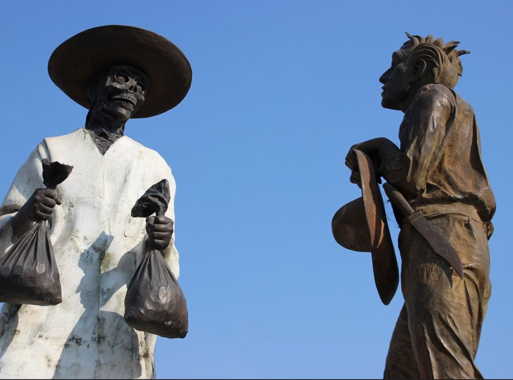

La leyenda del acaudalado y el soldado
Se dice que un acaudalado hombre tenía miedo de que le fueran a robar su fortuna,
por lo que en su desesperación contrató un soldado para que cuidara de ella, sin
embargo, el hombre mató al soldado y enterró su fortuna junto con el hombre para
que este cuidara su tesoro incluso de los muertos.
Lugareños comentan que aún pueden ver al soldado armado vagando por las calles
cuidando el tesoro.